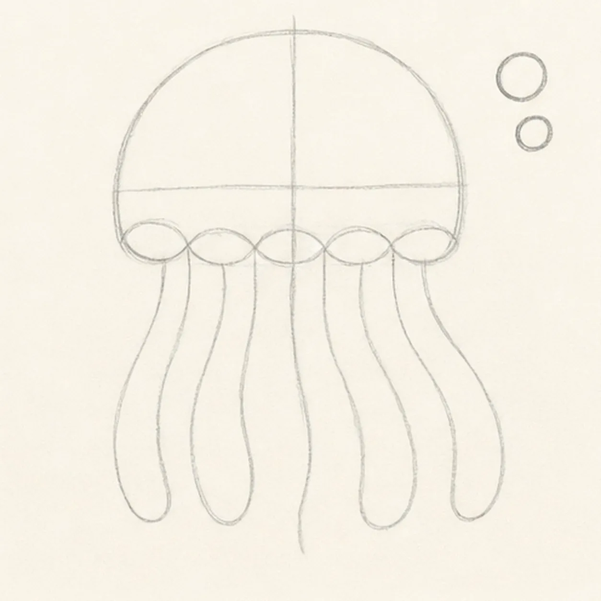
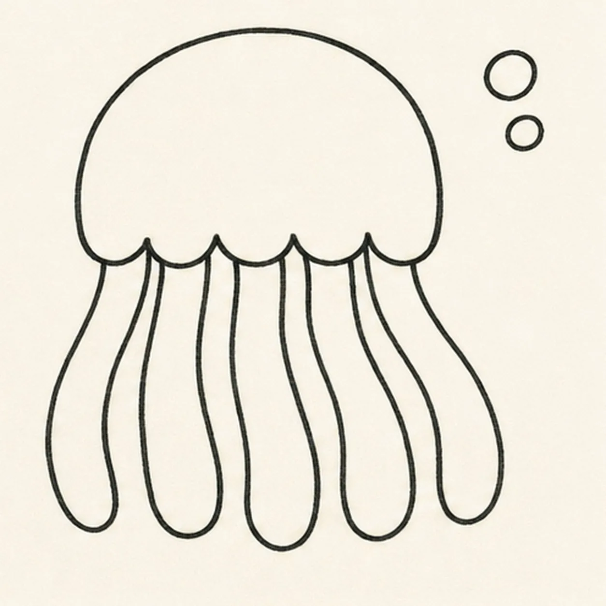
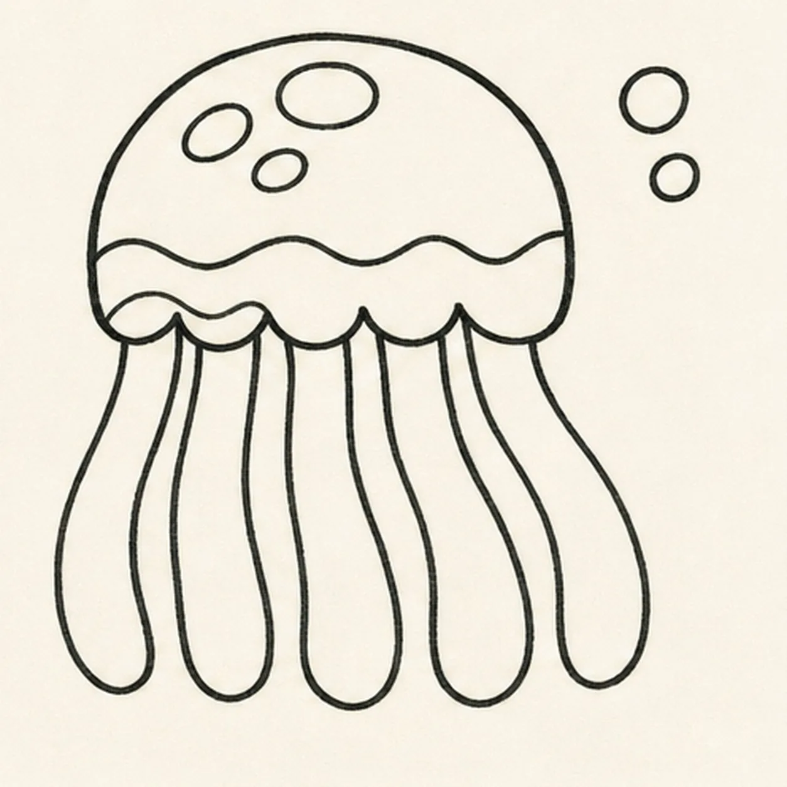
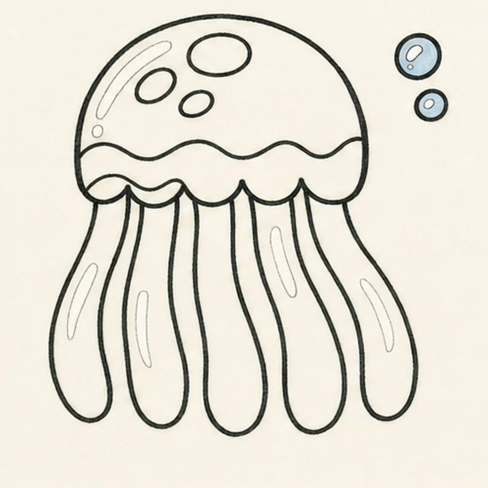
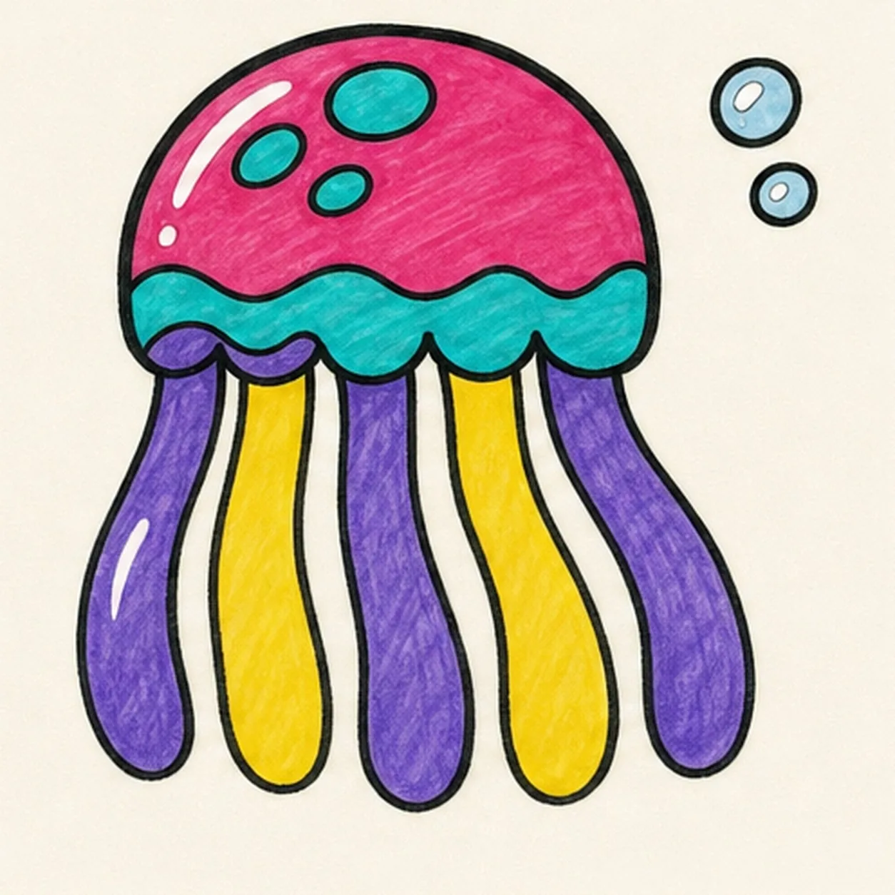

Felt-tip marker mode
Let's draw a colorful jellyfish
Treat this as one playful practice round: sketch the idea loosely, simplify the shapes, then commit with confident marker outlines and bright fills.
-
01

Float the jellyfish guides
Draw a light rounded bell and center axis, place a five-scallop skirt guide, then sweep exactly five tentacle paths and reserve two bubble positions.
Marker tip: Ghost all five tentacle paths before touching down and vary their curves without letting them cross. Mark the rounded tips early so every ribbon has a clear destination.
-
02

Shape the floating silhouette
Wrap the bell guide with five lower scallops, then turn every center path into one wide closed tentacle ribbon with two edges and a rounded tip.
Marker tip: Work one tentacle at a time from scallop to tip, then return along the second edge. Count five closed ribbons before moving on; an open centerline will be hard to color cleanly later.
-
03

Build the bell pattern
Preserve all five tentacles, add the wavy inner bell band, draw exactly three oval spots, and break hidden lines cleanly at each scallop overlap.
Marker tip: Follow the bell curve with the inner band instead of making a flat stripe. Keep the three spots uneven in size so the pattern feels playful without becoming a face.
-
04

Add bubbles and highlights
Clarify the two bubble rims with small highlight dots, then add curved paper-white highlight gaps across the established bell and tentacles.
Marker tip: Place each highlight inside an existing colored shape and curve it with that form. You can vary the highlight lengths while keeping the jellyfish face-free and easy to read.
-
05

Ink and color the jellyfish
Thicken every established contour, fill the upper bell raspberry, the lower band and three spots turquoise, the tentacles violet-yellow-violet-yellow-violet, and the two bubbles pale blue.
Marker tip: Pull marker strokes down each tentacle all the way to its rounded tip. Let neighboring colors dry before reinforcing the black gaps so the five ribbons remain separate.
-
06

Let the jellyfish glow
Strengthen the keeper outlines and clarify the established bell, five scallops, five closed tentacles, inner band, spots, two bubbles, marker fills, highlights, and overlaps.
Marker tip: Count five closed tentacles, three spots, and two bubbles, then stop. Eyes, a smile, fish, coral, seaweed, ocean scenery, sticker edges, or a badge frame are not needed.